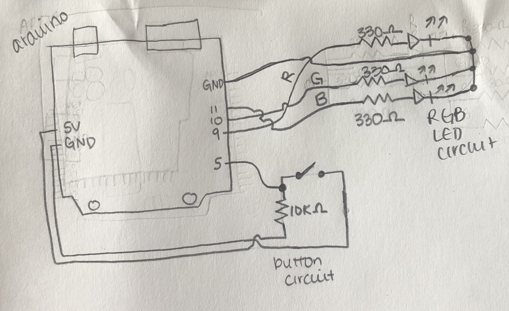
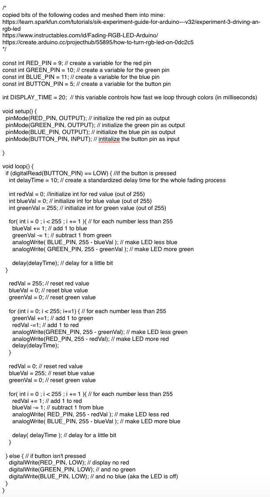
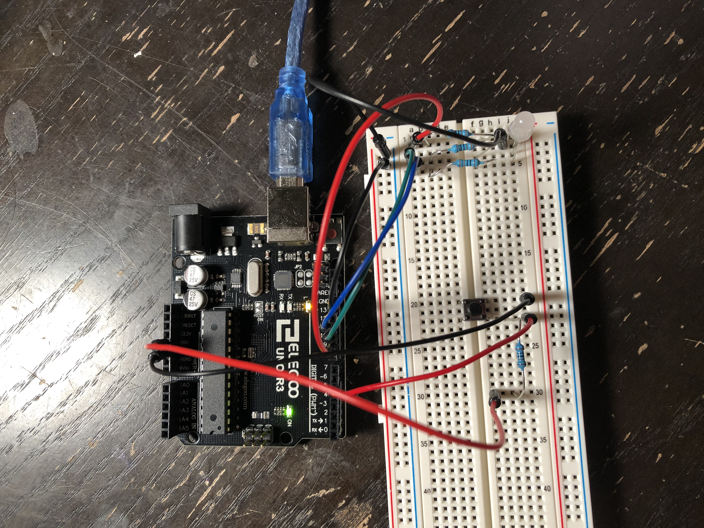

Alison's Assignment 2!
Here is all the documentation for assignment 2!
Schematic

This is my schematic! I chose to use a 10k ohm resistor for the button because that seems to be the standard for pushbuttons (according to the internet it preserves longevity of the button and reduces static). Next, I chose to use 330 ohm resistors for the RBG LED to be conservative as to not blow out the LED. For red I originally calculated 2V = .02 * R, where R = 100 ohms and green and blue 3.2V = .02 * R, R = 160 ohms, however, when I used 100 and 220 resistors (closest I had to 160), the LED was very bright and hard for my phone camera to pick up so I bumped all the resistors up to 330 ohm.
Code

This is my code. It works by telling the button to wait for input, and when it gets input, it fades the RGB LED through a variety of colors before turning off.
Circuit

This is a picture of my circuit!

And finally, here's a gif of my circuit's operation. I couldn't have done this assignment without the help of TJ and Gina in class in figuring out how to use pushbottons and RGB LEDs, this tutorial on wiring RBG LEDs, and this tutorial on fading an RBG LED, and this tutorial on RGB LEDs and pushbuttons.